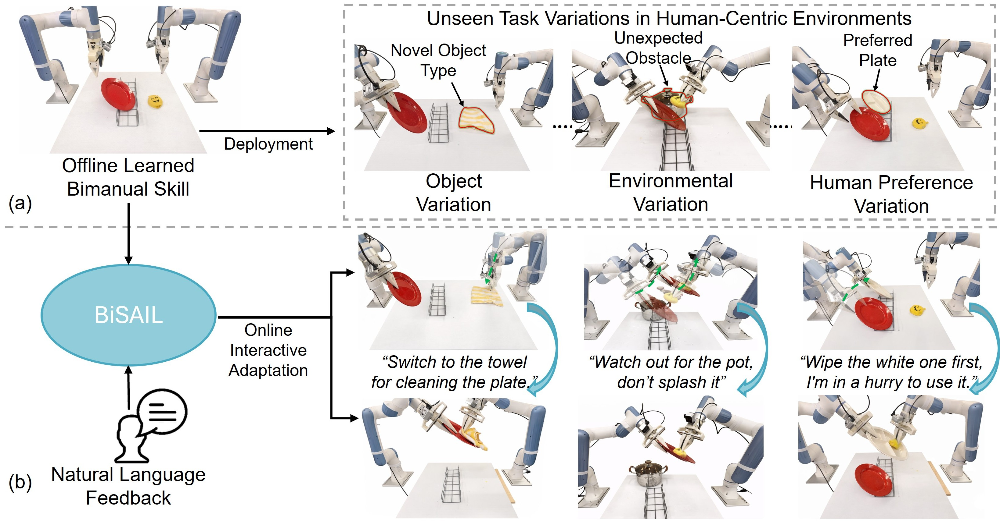
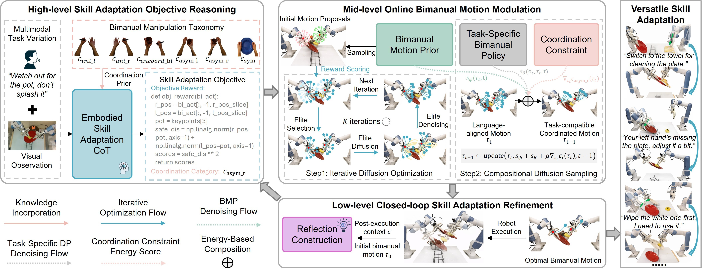
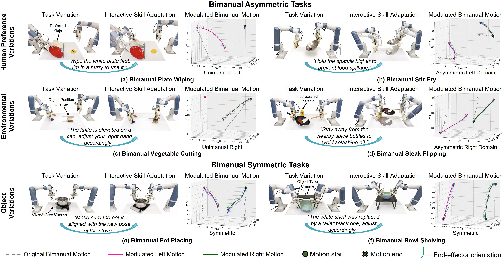
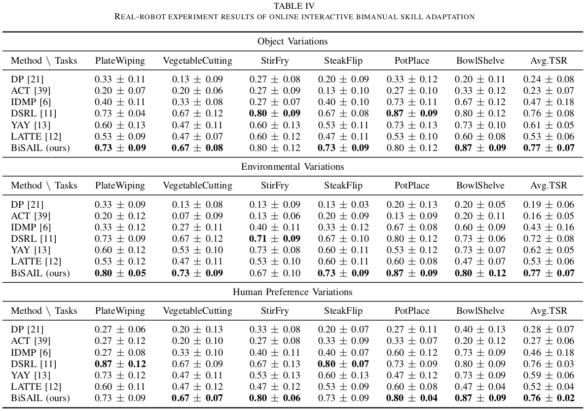

Adapt as You Say: Online Interactive Bimanual Skill Adaptation via Human Language Feedback
Abstract
Developing general-purpose robots capable of autonomously operating in human living environments requires the ability to adapt to continuously evolving task conditions. However, adapting high-dimensional coordinated bimanual skills to novel task variations at deployment remains a fundamental challenge. In this work, we present BiSAIL (Bimanual Skill Adaptation via Interactive Language), a novel framework that enables zero-shot online adaptation of offline-learned bimanual skills through interactive language feedback. The key idea of BiSAIL is to adopt a hierarchical reason-then-modulate paradigm, which first infers generalized adaptation objectives from multimodal task variations, and then adapts bimanual motions via diffusion modulation to achieve the inferred objectives. Extensive real-robot experiments across six bimanual tasks and two dual-arm platforms demonstrate that BiSAIL significantly outperforms existing methods in human-in-the-loop adaptability, task generalization and cross-embodiment scalability. This work enables the development of adaptive bimanual assistants that can be flexibly customized by non-expert users via intuitive verbal corrections.

Method
BiSAIL adopts a hierarchical reason-then-modulate paradigm across three interconnected stages: (1) High-level Adaptation Objective Reasoning — an Embodied Skill Adaptation Chain-of-Thought (ESA-CoT) module infers generalized bimanual adaptation objectives from multimodal task variations including language feedback and visual observation; (2) Mid-level Bimanual Motion Modulation — a diffusion-based online motion modulation algorithm aligns motion proposals from a learned Bimanual Motion Prior (BMP) with the adaptation objective via iterative diffusion optimization, followed by compositional diffusion sampling to enforce dual-arm coordination and task compatibility; (3) Low-level Skill Adaptation Refinement — a closed-loop reflection mechanism augments the objective reasoning process with post-adaptation reflection, enabling iterative refinement of both the adaptation objectives and the resulting bimanual motions.

Qualitative Results
BiSAIL demonstrates flexible and generalizable online interactive bimanual skill adaptation across diverse task variations, manipulation scenarios, and coordination categories. Real-robot experiments across six bimanual tasks — including Plate Wiping, Vegetable Cutting, Stir-Fry, Steak Flipping, Pot Placing, and Bowl Shelving — show that BiSAIL successfully adapts to object variations, environmental variations, and human preference variations through natural language corrections.

Quantitative Results
BiSAIL consistently achieves the highest Task Success Rate (TSR) across all six bimanual tasks and all three variation types (Object, Environmental, Human Preference), outperforming non-adaptive IL baselines, classical trajectory modulation (IDMP), policy fine-tuning (DSRL), and end-to-end language-guided baselines (YAY, LATTE). BiSAIL also demonstrates strong cross-embodiment scalability on a dual-arm Franka platform, achieving high Intent Alignment, Task Adaptation, and Coordination Satisfaction scores across four bimanual tasks.

BibTeX
@article{li2025bisail,
title = {Adapt as You Say: Online Interactive Bimanual Skill Adaptation via Human Language Feedback},
author = {Li, Zhuo and Li, Dianxi and Teng, Tao and Rouxel, Quentin and Dong, Zhipeng and Hong, Dennis and Caldwell, Darwin and Chen, Fei},
journal = {IEEE/ASME Transactions on Mechatronics},
year = {2025},
note = {Under Review}
}